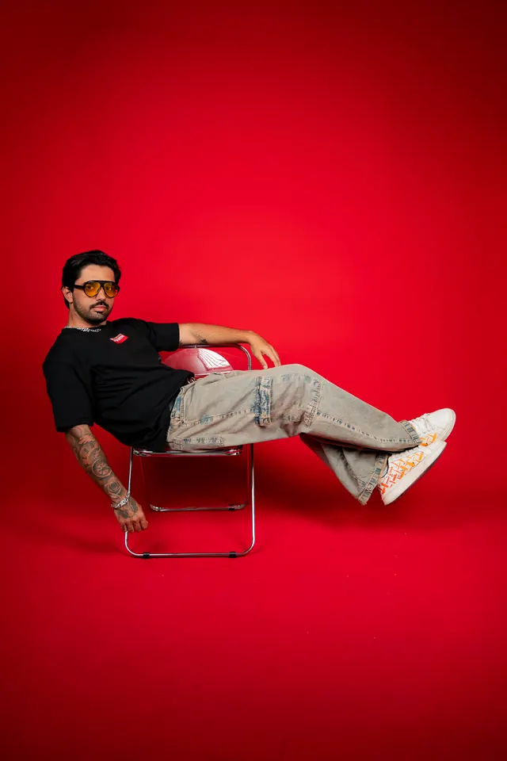
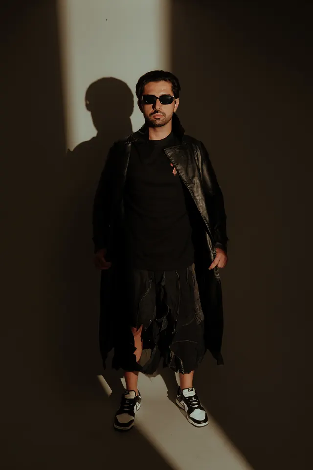
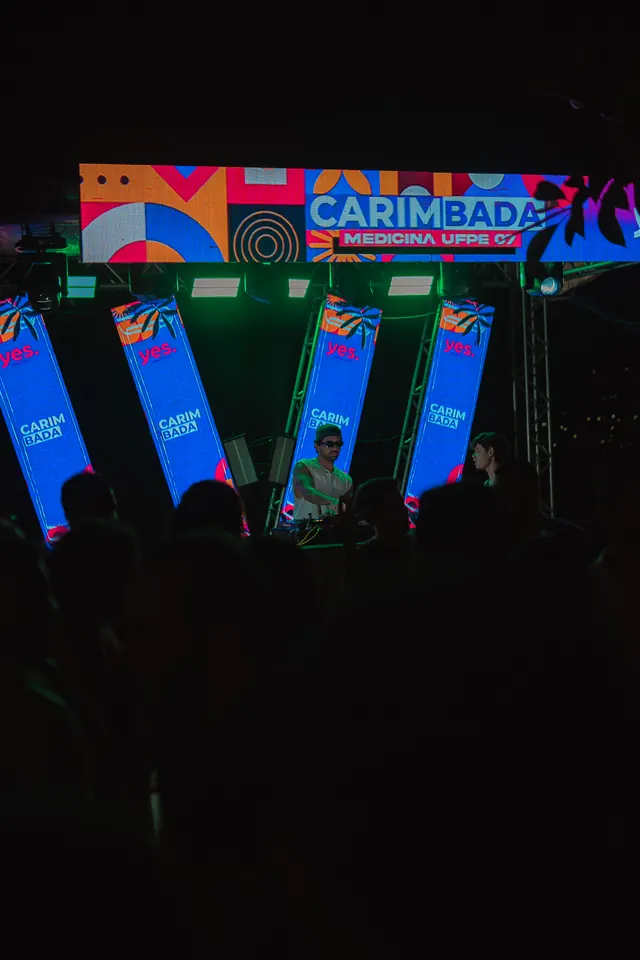
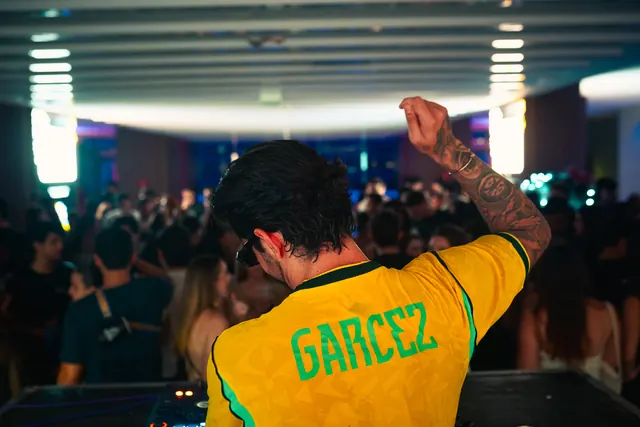
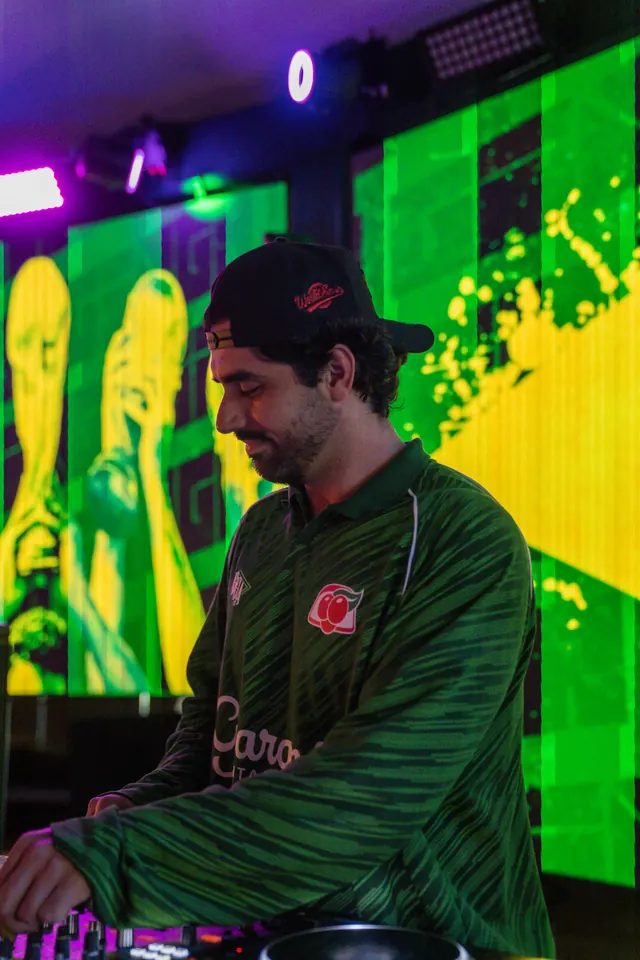

GARCEZ


01 Quem Sou
Quem
Sou
GARCEZ é DJ. Brasil e Portugal na bandeira, a pista como ponto de encontro.
A pista manda.
O GARCEZ comanda.
02 Ensaios
03 Carreira
Registros
de palco
-

Carimbada
Fotos: @gabriellrec
-
Intermed Litoral Leste
-
Echoes
03.1 Na pista


04 Lançamentos
Lançamentos
05 Contato · Bookings
Vamos levar essa energia para o seu evento?
Shows, festas e eventos. Orçamentos pelo WhatsApp de bookings.